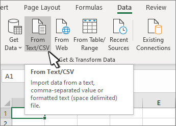
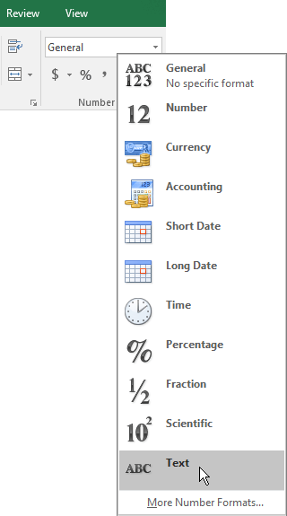
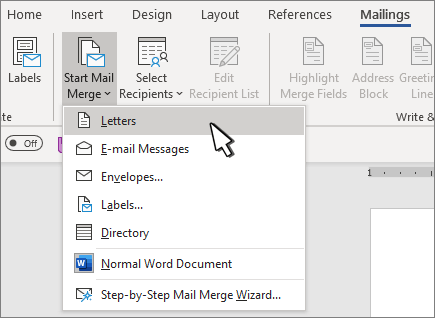
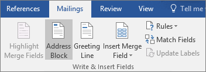
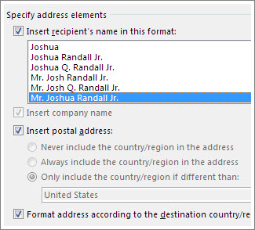
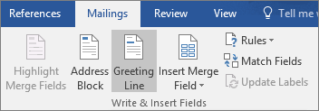
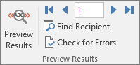
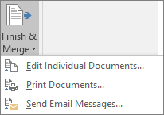

Satu Dokumen Induk
Surat ditulis satu kali pada dokumen induk — lengkap dengan format, kop, dan isi tetap. Bagian yang berubah digantikan oleh merge field.
Mail merge (gabungan surat / surat massal) adalah fitur Microsoft Word untuk menghasilkan banyak surat dengan tampilan yang sama tetapi isi yang berbeda untuk setiap penerima — nama, alamat, jabatan, dan data lain diambil otomatis dari sebuah daftar (umumnya file Excel). Anda cukup menulis satu dokumen induk berisi penanda, lalu Word membuat satu surat untuk setiap baris data.
Surat ditulis satu kali pada dokumen induk — lengkap dengan format, kop, dan isi tetap. Bagian yang berubah digantikan oleh merge field.
Daftar penerima disimpan sekali sebagai sumber data: file Excel, kontak Outlook, basis data Access, atau daftar yang diketik di Word.
Word menggabungkan keduanya dan menghasilkan satu salinan surat untuk setiap baris data — tanpa salin-tempel manual.
Konsep dasar beserta contoh dokumen induk dan hasilnya.
Mail merge adalah proses menggabungkan sebuah dokumen utama yang formatnya tetap dengan sebuah sumber data yang isinya berubah-ubah, sehingga menghasilkan sekumpulan dokumen yang dipersonalisasi. Setiap baris pada sumber data menghasilkan satu surat.
Word menandai bagian yang berubah dengan merge field (field gabungan). Saat penggabungan dijalankan, Word mengisi field tersebut dengan data dari sumber data.
Dokumen induk (yang Anda tulis): Kepada: «Nama» «Nama Belakang» «Alamat» «Kota» «Kode Pos» Yth. «Sapaan» «Nama Belakang», Terima kasih atas partisipasi Anda ...
Hasil untuk baris pertama: Kepada: Ahmad Fauzi Jl. Malioboro No. 1 Yogyakarta 55213 Yth. Bapak Fauzi, Terima kasih atas partisipasi Anda ...
⚠️ Mail merge bukan untuk mengirim surat yang isinya sama persis tanpa personalisasi. Jika isinya identik, cukup cetak satu dokumen berkali-kali. Kekuatan mail merge justru terletak pada variasi data per penerima.
| Pilihan | Digunakan untuk |
|---|---|
| Letters | Surat yang dicetak pada lembar terpisah per penerima. |
| E-mail Messages | Email dengan satu penerima pada baris To. |
| Envelopes | Amplop berisi nama dan alamat. |
| Labels | Lembaran label alamat. |
| Directory | Daftar/katalog data (bukan satu halaman per orang). |
Tiga bagian yang selalu ada pada setiap penggabungan surat.
Main document berisi teks dan format yang sama untuk semua penerima: kop surat, isi, tanda tangan, dan penutup. Bagian yang berubah digantikan oleh merge field.
Data source berisi daftar penerima: satu baris per orang, satu kolom per informasi (Nama, Alamat, Kota, Kode Pos, dan seterusnya). Dapat berupa Excel, Outlook, Access, atau daftar baru di Word.
Field gabungan adalah penanda seperti «Nama» di
dalam dokumen induk. Saat digabungkan, Word menggantinya dengan nilai
dari kolom yang bersesuaian.
📌 Alur singkat: tulis dokumen induk → hubungkan sumber data → sisipkan merge field → pratinjau hasil → cetak/simpan. Seluruh proses ini dijalankan dari tab Mailings di Word.
Kualitas data menentukan kualitas hasil mail merge. Rapikan daftar sebelum digabungkan.
Nama;Alamat;Kota;Kode Pos Ahmad Fauzi;Jl. Malioboro No. 1;Yogyakarta;55213 Siti Rahma;Jl. Pemuda No. 20;Surabaya;60271 Budi Santoso;Jl. Asia Afrika No. 5;Bandung;40111
✅ Simpan file di komputer lokal atau folder berbagi. Word tidak dapat memakai sumber data yang tersimpan di alamat web (HTTP) sebagai sumber mail merge.
00399
berubah menjadi 399. Format kolom sebagai Text.Impor dulu ke Excel melalui Data → From Text/CSV. Pada pratinjau impor, atur kolom kode pos menjadi Text, lalu pilih Load.


Panduan langkah demi langkah untuk Word versi Windows, dari membuat dokumen induk sampai mencetak.

💡 Anda juga dapat memilih Type a New List untuk mengetik daftar langsung di Word, atau Choose from Outlook Contacts untuk memakai kontak Outlook.



📌 Saat belum digabungkan, field tampil sebagai «Nama»,
«Alamat», dan seterusnya. Ini normal —
hasil sebenarnya terlihat setelah pratinjau.


⚠️ Periksa hasil pada langkah pratinjau sebelum mencetak, khususnya spasi ganda, field kosong (penerima tanpa alamat), dan pemenggalan baris. Lebih mudah membetulkan dokumen induk daripada menyunting ratusan surat hasil.
Dokumen mail merge tetap terhubung dengan daftar penerima sehingga dapat dipakai lagi.
surat_undangan_hasil.docx) agar tidak menimpa dokumen induk.Kendala yang sering ditemui saat mail merge dan cara mengatasinya.
00399 → 399): format kolom kode pos sebagai Text di Excel.Rp) pada dokumen induk di sekitar merge field.«Nama»: wajar sebelum penggabungan; gunakan Preview Results untuk melihat hasil.Sumber resmi Microsoft yang mendasari panduan ini, termasuk asal tangkapan layar yang digunakan.
🖼️ Atribusi gambar: seluruh tangkapan layar antarmuka Microsoft Word dan Excel pada halaman ini berasal dari dokumentasi resmi support.microsoft.com dan merupakan hak milik Microsoft Corporation; digunakan untuk keperluan edukasi. Tampilan menu dapat sedikit berbeda tergantung versi Office yang Anda pakai.